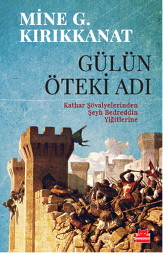
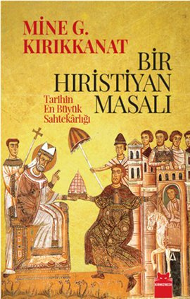
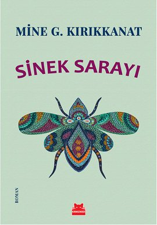

Mine Gökçe Kırıkkanat (d. 1951, Ankara) Türk gazeteci, yazar ve köşe yazarı.
Notre Dame de Sion Fransız Lisesi'ni ve İstanbul Üniversitesi Edebiyat Fakültesi Sosyoloji bölümünü bitirdi. Gazeteciliğe Cumhuriyet Gazetesi'nin İspanya muhabiri olarak başladı, Cumhuriyet Gazetesi Fransa temsilciliğine getirildi.
1992 yılında Milliyet Gazetesi'ne geçti. 1996 yılında Milliyet Fransa muhabirliğiyle birlikte, Radikal Gazetesi'nde köşe yazarlığı yaptı. 2005-2010 yılları arasında köşe yazılarını Vatan Gazetesi'nde devam ettirdi. Daha sonra kendi deyimi ile 'yuvaya dönen' yazar, 2010 sonbaharından itibaren yazılarını Cumhuriyet Gazetesi'nde sürdürüyor. Fransızca TV5 Monde kanalının yabancı gazeteciler ekibinde yer alıyor. Yazarın edebi eserleri deneme, araştırma, öykü ve roman türünde olup yapıtlarını Sinek Sarayı, Bir Gün Gece ve Destina (Literatür Yayınları, 2008), Bir Nehir Roman oluşturmaktadır.
Mine Kırıkkanat çok iyi derecede Fransızca ve İngilizce biliyor. Tek çocuk annesidir.
-

Gülün Öteki Adı
Onuncu yüzyıldan başlayarak on dördüncü yüzyıla dek Güney Fransa'nın Oksitanya bölgesinde etkili olmuş Kathar doktrini ile 1417'de asılarak öldürülen Şeyh Bedreddin mezhebi arasında akrabalık aramak, ilk bakışta düşsel gelebilir.
Oysa Şeyh Bedreddin yandaşlarının örgütlendikleri Aydın Beyliği, Kathar doktrininin aynı bölgede baş verdiği Alaşehir (Philadelphia) odağının yansıma alanı içindedir. Şeyh Bedreddin öğretisi, Kathar öğretisinden izdüşümler taşır. İki yüzyıl arayla kesişen ve binlerce kilometreye yayılan bir "aynı" alanda her iki inancın sahipleri, "yârin yanağından gayrı her yerde, hep beraber, her şeyi paylaşmak" için yola çıkmışlar ve aynı insanlık ülküsüne aynı bedeli ödemişlerdir: Hayatlarını. Mine G. Kırıkkanat'ın sosyolojik tarih araştırması Gülün Öteki Adı, 1989'dan beri, Osmanlı döneminde Anadolu dinleri ve özellikle Alevilik tarihi üzerine yazılan pek çok bilimsel kitaba referans olmuş ve dünyada üniversiteler düzeyinde kabul gören bir başyapıttır.
ISBN : 9786054927265 | Satın al
-

Bir Hıristiyan Masalı
Papalık makamı ve devletinin kurucu yasası, Vatikan'ın gizli arşivlerinde "Donatio Constantini" başlığıyla yer alan Büyük Konstantin'in vasiyet belgesi, dünya tarihinin en büyük sahtekârlığı, Avrupa'yı Asya'dan ayıran siyasal oluşumun temel yalanıdır.
Böyle bir vasiyet yoktur. Papalık devleti bir tezgahtır ve Papa'ların ne ruhani, ne de siyasal meşruiyeti vardır. Büyük Konstantin'e atfedilen sahte vasiyet, Hıristiyan dünyaya önderlik ve devletler üstü yetki makamını, Konstantinopolis'ten Roma'ya kaydırmaya yaramıştır.
Bir Hıristiyan Masalı, 1684 yıl önce dünyanın merkezi İstanbul'a karşı kurulan çokuluslu komplonun, polisiye tadında tarihidir. İstanbul, 1123 yıl süreyle Roma İmparatorluğu'nun başkentiydi. Sadece 561 yıldır bizim mülkümüz. Geçmişini doğru okuyamazsak, geleceğini çaldırabileceğimiz bir mücevher.
Çünkü komplo baki…
Komplocular, pusuda.
ISBN : 9786054927012 | Satın al
-

Sinek Sarayı
"...Trakya köylerinde evin başköşesinde durur. İncecik çöplerden yapılmış, minyatür bir Uzak Doğu tapınağını andırır. Üstünü renk renk, küçücük çaput parçaları süsler, rüzgârda kımıl kımıldır. Suyun dibinde balıkların kandığı olta tüyleri gibi, sinek sarayının görevi de sinekleri üstüne çekmektir. Evin içindeki sinekler, bu kımıl kımıl ince sarayın üstüne toplanırlar; renkli çaput parçalarına, incecik çöplere pislerler. Evin diğer eşyaları bir ölçüde temiz kalır. Rüzgârda salınan narin gövdesi ve güzelim renkleriyle sinek sarayının gerçekte ne işe yaradığını görmek, insanı hüzünlendirir. Kimi evler ve kimi yaşamlar da sinek saraylarına benzerler. Görevleri temiz olmak değildir, ama boşuna oldukları da söylenemez. Güzellikleri ise bizim hanemize kazanç yazılır..."
Fransız bir baba ve Türk bir annenin oğlu olan Sinan Laforge, Paris'teki ideale yakın hayatını bir süreliğine askıya alarak geleceği hakkında düşünmek için İstanbul'a gelir. Yakın dostunun ona açtığı Cihangir'deki apartman, âdeta Burlesk bir gösteriden fırlamış gibidir. Cüce bir kapıcı ve mongol oğlu, gece kulüplerinde çalgıcılık yaparak geçimlerini sağlayan ikiz kız kardeşler, bir fahişe, bir travesti ve umutsuz bir yaşlı kadın ile dul kızı... Bu insanlar da, parçalanmış kimlikleri ve ikiye bölünmüş yaşamlarıyla Bülbül Sokağı gibi bir çıkmazdadır sanki.
Cihangir sokaklarındaki renkli manzaraları, çetrefilli ilişkileri, ümitleri ve hayal kırıklıklarını, sevinci ve hüznü son derece sade, canlı ve akıcı bir üslupla kaleme alan Mine G. Kırıkkanat, Sinek Sarayı'nda okura insan ruhundan çarpıcı bir kesit sunuyor.
ISBN : 9786059908429 | Satın al
-
- Aşk Varmış, Aşk Yokmuş, Destek Yayınları, İstanbul, 2011, ISBN 9786054455485
- Umudun Kırık Kanatlarında, Destek Yayınları, İstanbul, 2011, ISBN 9786054455140
- Örtülü Özgürlük, Cumhuriyet Kitapları, İstanbul, 2011, ISBN 9786055525972
- Bir Gün , Gece, Literatür Yayıncılık, İstanbul, 2008, ISBN 9789750404818
- Destina, Literatür Yayıncılık, İstanbul, 2008, ISBN 9789750404801
- Aşk Hikayeleri, Epsilon Yayınları, İstanbul, 2004, ISBN 9789753315555
- Amerika,Amerika, Erko Yayıncılık , İstanbul, 2007, ISBN 9789944338622
- Paris,Paris, Erko Yayıncılık, İstanbul, 2007, ISBN 9789944338615
- Pandispanya, Erko Yayıncılık, İstanbul, 2007, ISBN 9789944338493
- Allah Allah Bizim Kontesi Kim Sevdi, Erko Yayıncılık, İstanbul, 2007, ISBN 9789944338462
- Yalnız Kalem Unutmaz, Detay Yayıncılık, İstanbul, 2006, ISBN 9789944314015
- Her Şeye Rağmen, Epsilon Yayınları, İstanbul, 2006, ISBN 9789753319607